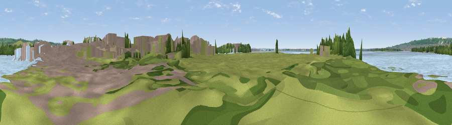

Viewpoint near Tipner
#42188 in England · top 90% of its area beats it · near TipnerWhere it is
The exact computed spot (SU 63801 03429). Click the marker for map links.
The view, rendered

A 360° render of this exact spot computed from the terrain model, tree cover and land cover — summer colours, afternoon light, calibrated against photographs of famous viewpoints. Real trees, hedges and buildings will differ in detail.
The panorama
Grey silhouette: terrain skyline in each direction (720 bearings, Earth curvature and refraction included). Dashed green: skyline with trees (+15 m) and buildings (+8 m) as obstacles. Blue strip: how far the ground is visible on each bearing.
Where the view opens
Wedge length = distance to the farthest visible ground on that bearing (vegetation-aware). Rings at 10, 25 and 50 km.
What fills the view
46% water · 21% grassland · 18% built-up · 13% woodland ·
Angular shares of the visible panorama (visual magnitude), not map area. Landscape diversity 0.58 (0–1 Shannon).
Key numbers
More beautiful places nearby
The staircase of upgrades: each row has a higher view potential than everything closer. Driving times are estimates from straight-line distance, calibrated against real road routing — check an actual route before setting out.
| Place | Direction | Drive | Score |
|---|---|---|---|
| Horsea Island | NNE · 1 km | ~3 min | 57.9 |
| Viewpoint near Southwick | N · 3 km | ~8 min | 76.6 |
| Viewpoint near Alverstone | SSW · 17 km | ~30 min | 79.1 |
| Viewpoint near Buriton | NNE · 19 km | ~32 min | 80.0 |
| Beacon Hill | NE · 23 km | ~37 min | 85.8 |
| Viewpoint near Upper Bonchurch | SSW · 25 km | ~41 min | 86.4 |
| Viewpoint near St. Lawrence | SSW · 28 km | ~44 min | 88.2 |
| Viewpoint near Niton | SSW · 31 km | ~48 min | 89.2 |
50.82689, -1.09551 · source: osm viewpoint · position refined by local search. Computed location — check access rights before visiting.